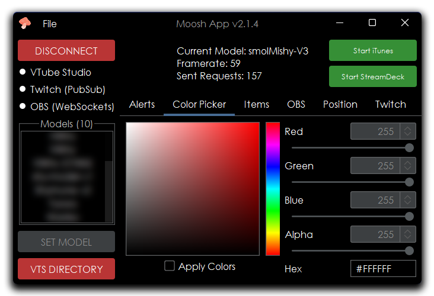

Visual layouts and designs
Projects¶
I have much experience with designing in a few different programming languages and creating full exernal applications and easy-to-use user interface menus.
I created this application called 'Moosh App' along with an old friend of mine as an applet to help with my virtual model during my streams. I sketched out the design and we worked hand-in-hand to create it using only Java.
This extremely useful application is utilized in my streams still to this day. It hooks into the VTube Studio, OBS Studio and Twitch PubSub (which I will soon be migrating to EventSub later this year) websockets and communicates with each other to accomplish certain tasks.
It can do a multitude of events like hide or move the position of a model based on if a certain OBS scene is viewed, update the color of a currently loaded model and apply certain effects using the VTube Studio API.
The video above is of an old Minecraft client I created called Meta. It contains 80+ features as well as many different customizable options when it comes to the coloring and how you want your GUI to look.

These images above are of a couple of the main menus I made for my clients. I used to go under the alias 'Aqua' during most of my years playing Minecraft.
I created these as custom projects for one of my now-defunct Minecraft YouTube channel.
I have had the pleasure and opportunity of designing a full website for a few companies where I am hailing from.
I have also once created a RedBubble account and uploaded a bunch of custom designed t-shirts and designs on many different items, attaining thousands of dollars in the process.
More pictures will soon be added to this webpage.